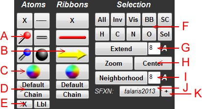
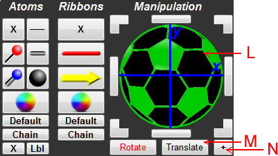

Figure 1: Schematic of the selection window.
A: Atom Representations - These are controls to change the representations of the selected atoms. The options from top to bottom, reading left to right are off, lines, balls and lines, sticks, balls and sticks, and space-fill.
B: Ribbon Representations- These are controls to change the representations of the selected ribbons. From top to bottom, the options are off, thin ribbons, and cartoon ribbons.
C: Atom/Ribbon Color - Specify the color of the selected atoms/ribbons. For atoms, only the carbon atoms will be recolored.
D: More Atom/Ribbon Color Options - Revert to default coloring or color each chain distinctly.
E: Residue Labels - Turn residue labels on and off in PyMOL. Labels display the 3-letter residue code and its PDB number.
F: Atom Selection Tools - Click these buttons to select specific atom types. From top to bottom, reading left to right, select all atoms, invert current selection, select visible atoms, select backbone atoms, select sidechain atoms, select hydrogen atoms, select carbon atoms, select nitrogen atoms, select oxygen atoms, and select solvent atoms.
G: Extend Selection - Click this button to selection everything within a given Angstrom radius of the current selection.
H: Zoom and Center - Zoom in on the current selection or place the center of location at the center of the current selection.
I: Neighborhood View - View the current selection and everything within the given radius in Angstroms. In PyMOL, the current selection will be given a stick display, everything outside of this selection but within the radius is given a line display, and everything else is hidden.
J: Select Scoring Function - Click this button to change the scoring function that will be used for Rosetta protocols (advanced use only, use talaris2013 if you do not have a reason not to use it).
K: Manipulation Mode - Click this button change to manipulation mode, shown below

L: Rotation/Translation Field - Use this gadget to rotate and translate your selected atoms. Click and drag in the soccer ball sphere to rotate and move the selection. Alternatively, you may click on the surrounding button to nudge the selection in that direction.
M: Manipulation Type - Select the type of transformation that will be occuring.
N: Selection Mode - Click this button to revert to the previous selection panel.